SoSe 2024 Serafin Kollegger & Julian Huber
Automatisierungstechnik
Mess-/Steuerkette AD-Wandler PID-Regler
Mess-/Steuerkette
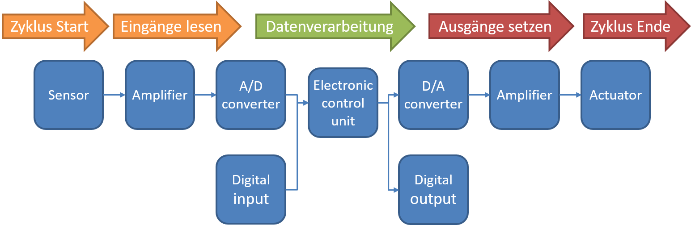
Hardware der Messsteuerkette
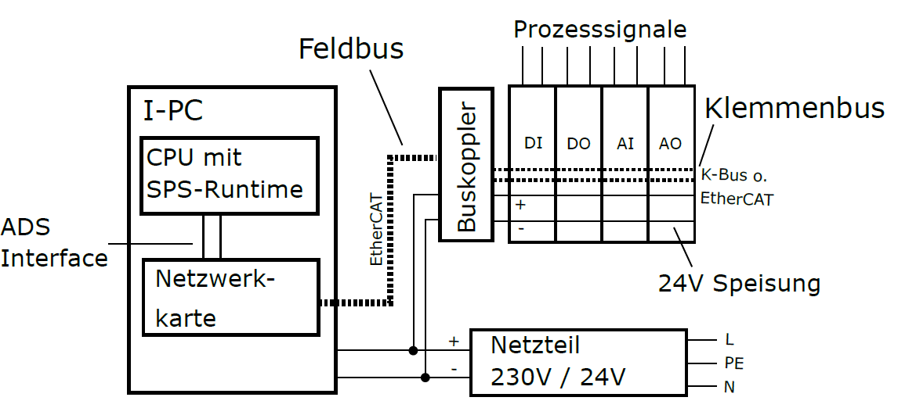
Feldbus
Schnittstelle E/A-Geräte und Steuerung
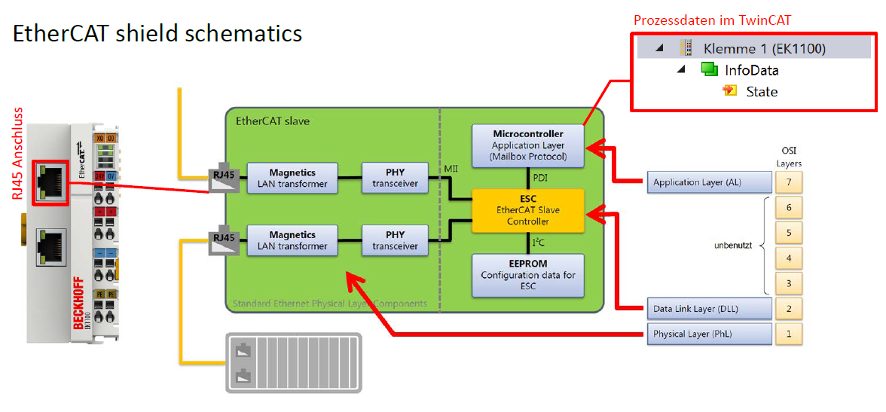
Wie funktioniert EtherCAT https://www.youtube.com/watch?v=9-s3fzGxEI4
Sensoren & Eingangssignale
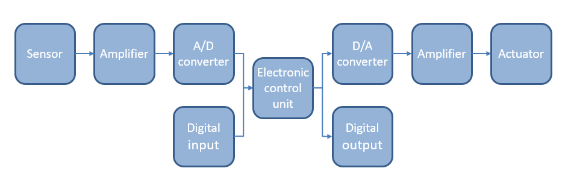
Sensoren & Eingangssignale
Sensoren mit Wirkungsweise:
- Temperatursensoren
-
Änderung des Widerstands oder der Spannung
-
Drucksensor
-
Änderung des Widerstands oder der Kapazität
-
Kraftsensor
-
Änderung des Widerstands oder der elektrischen Ladung
-
Lichtsensor
-
Änderung des Widerstands oder der Spannung
-
Positionssensor
- Änderung des Widerstands oder der elektrischen Impulse
Signaltypen Analoger Sensoren
Volt-Basiert: 0...10V , -10...10V
Strom-Basiert: 0...20mA , 4...20mA
Wie können die oft sehr kleinen Änderungen der Messgrößen in standartisierte Signale umgewandelt werden?
Verstärker
Sensoren zusammen mit Verstärkern werden als Transmitter bezeichnet, heutiger Standard für industrielle Sensoren.
Vorteile von Transmittern
Transmitter in einem Gehäuse kombiniert:
- Sensor
- Verstärker
Vorteile:
- Der Verstärker ist nah am Sensor und in kompakter Bauform
- Kalibrierung wird vom Hersteller durchgeführt !!!
- Kosteneffektiv
Reduktion von Störungen bei der Signal übertragung
Zur reduktion von EMS können Transmitter in einer differential Schaltung angeordnet werden.
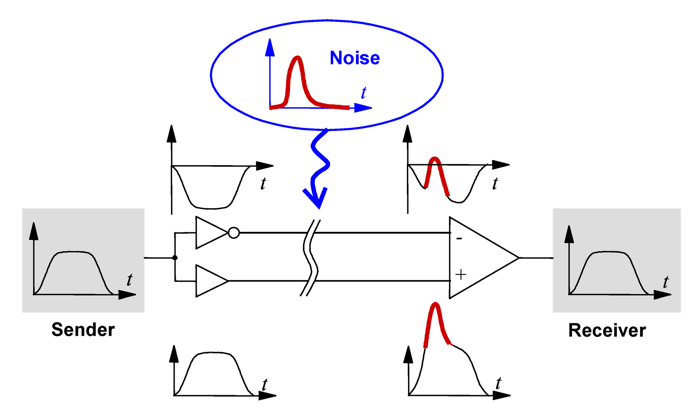
Analog/Digital - Wandler
EL 3xxx
Analog/Digital - Wandler
- Verstärker oder Transmitter geben analoge Signale (0..10V, 4..20mA) aus
- Signale müssen in digitale Werte umgewandelt werden
- Damit sie von einem Computer verarbeitet werden können
- Dies wird von einem Analog-Digital-Wandler (ADC) durchgeführt
- Heutzutage wird binäre Logik verwendet
- Analoge Signale werden in Binärzahlen umgewandelt. Binärzahlen bestehen aus Binärziffern. Eine Ziffer kann zwei Zustände haben, die normalerweise durch die Zeichen „0“ und „1“ dargestellt werden. Zur Darstellung einer Zahl benötigen wir mehr Ziffern
Kontinuierliche vs. Diskrete Signale

Kontinuierliche vs. Diskrete Signale
- Auflösung und Abtastrate
- Die Anzahl der Ziffern (Bits), die von einem ADC erzeugt werden, wird als Auflösung des ADC bezeichnet und in Bits angegeben.
- Die Anzahl der Umwandlungen pro Sekunde wird als Abtastrate bezeichnet.
- Derzeit sind folgende Auflösungen und Abtastraten üblich:
| Auflösung | Teilung | Abtastrate |
|---|---|---|
| 8 Bit | 256 Schritte | bis zu 10 GSamples/s |
| 12 Bit | 4096 Schritte | bis zu 2 GSamples/s |
| 16 Bit | 65536 Schritte | bis zu 250 MSamples/s |
| 24 Bit | 16 Millionen Schritte | bis zu 100 kSamples/s |
- Höhere Auflösung und/oder höhere Geschwindigkeit führen zu höheren Kosten.
Beispiel Wertediskretisierung / Auflösung
für dieses Signal: $$ \Delta u = 1.25 V \rightarrow u_{max} = 10V; n = 3; $$ Damit liegt der tatsächliche Spannungswert zwischen 0 und 1,25V bei umgewandelter Zahl 0.

Beispiel Zeitdiskretisierung / Abtastrate
Abtastrate wird durch die Zykluszeit vorgegeben. In Fällen wo eine erhöhte Abtastfrequenz erforderlich ist, werden eingene Tasks eingesetzt. In Sonderfällen, wenn es die Klemmen zulassen, kann Oversampling Funktion verwendet werden.
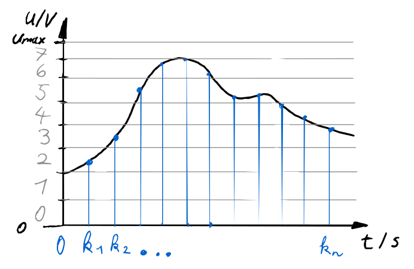
Nyquist-Shannon Theorem
- Abtasttheorem
- Wenn die höchste Frequenz im Signal f ist, dann muss das Signal mit mindestens 2 * f abgetastet werden.
- Wurde von Nyquist und Shannon entwickelt.
- Beschreibt, wie oft ein Signal abgetastet werden muss, um es reproduzieren zu können.
- Beispiel: Wenn Sie ein Signal mit maximal 10 Hz messen möchten, müssen Sie mindestens 20 Abtastungen pro Sekunde durchführen.
- Für den praktischen Gebrauch benötigen Sie eine Abtastrate, die mindestens 2,5-mal höher ist, aufgrund der Toleranzen der Komponenten.
Abtastfrequenz von Harmonischen Signalen
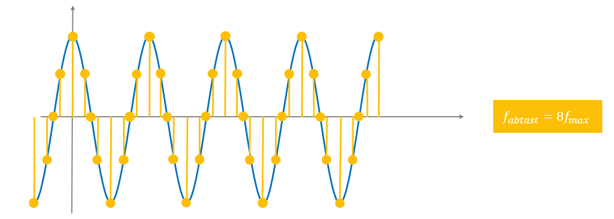
Bodediagramm des Eingangsfilters
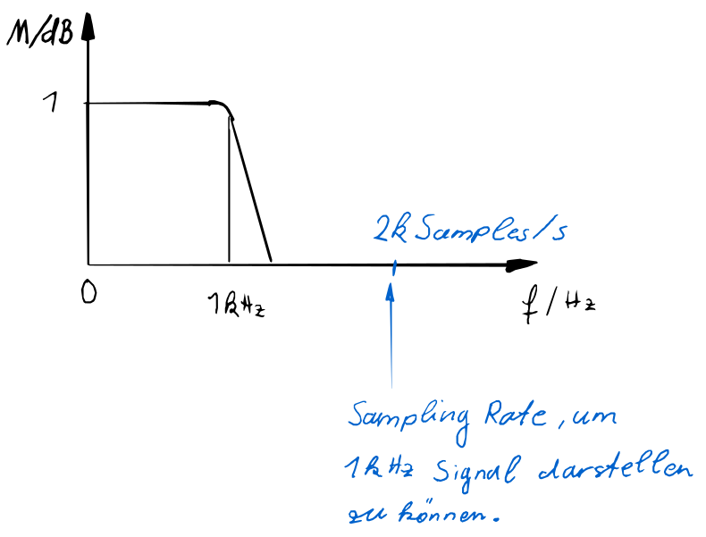
Skalierung der Eingangswerte
-
Damit in der Steuerung mit geeigneten Werten gearbeitet werden kann, muss der Eingang des Feldbuses auf den gemessenen physikalischen Wert zurückgerechnet werden.
-
Die dazu benötigten Größen, sind Auflösung ADC, Sensorreichweite, Sensorsensitivität und Messbereich.
-
Mit diesen Werten kann bei linearen Sensor verhalten auf die gemessene Größe gerechnet werden durch eine lineare Funktion.
- Beispiel Ultraschallsensor:
- Messbereich : 350mm
- Totzone : 30mm
- Sensorsensitivität: 0.07 mm
- Sensorausgang : 0...10V
- ADC Auflösung : 12 Bit (16- Bit Darstellung im Feldbus)
x...ADC Eingangswert über Feldbus y...Messgröße in Sensoreinheit (mm)
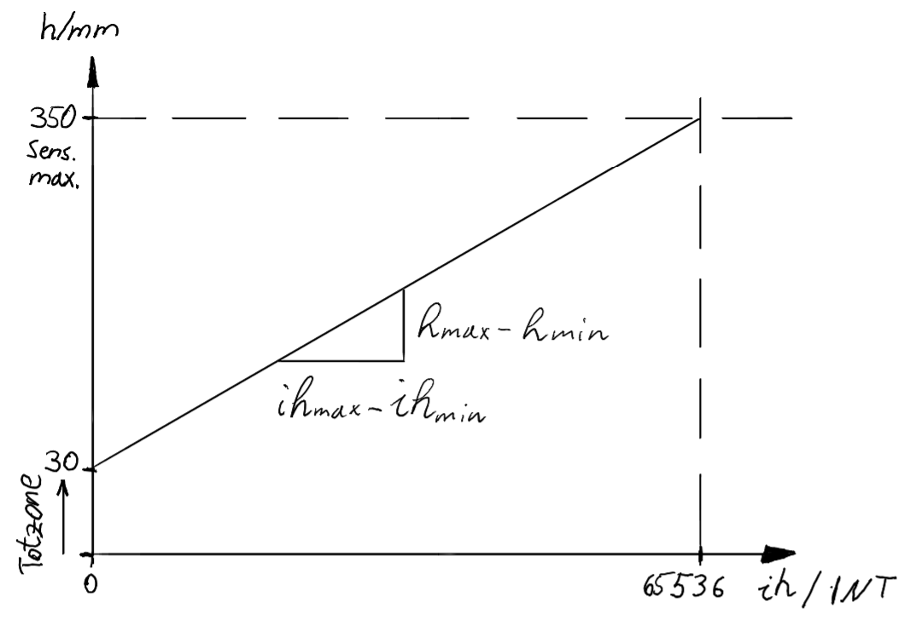
Aktoren & Ausgangssignale
Im Vergleich zu Sensoren sind für Aktuatoren oft keine Standartsignale definiert. Weiters handelt es sich heufig um Komponenten mit hoher Leistung, d.h. die ansteuerung kann nicht direkt erfolgen, sondern durch leistungsverstärker.
Das Niquist-Shannon Theorem gilt auch für die Wiederherstellung von Analogen signalen.
Feldbus übertragung der Analogwerte basiert normalerweise auf INT Daten Typ (16 Bit), d.h. 16Bit somit sind die ADC Reichweiten auf diese 16 Bit festgelegt. Ein 12 Bit DAC bekommt Zahlen von 0 bis 65536, um seine Reichweite abzubilden, kann diese aber nur in 12 Bit Auflösung, Analogwerte wiedergeben. Somit sind 16 zahlen im feldbus immer die gleichen Ausgangssignale.
Datenaufzeichnung - Scope Baustein
Reglerimplementierung
Reglerstruktur
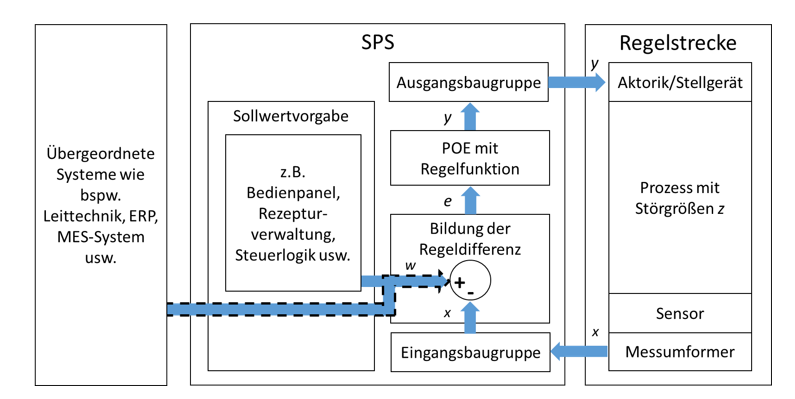
PID Regler mit direkten Parametern
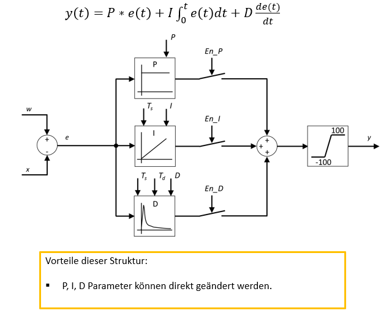
PID Regler mit zeitlichen Parametern
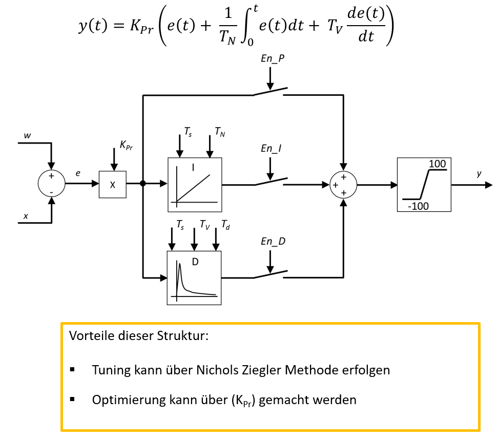
Ziegler Nichols Parameter Tunning Methode
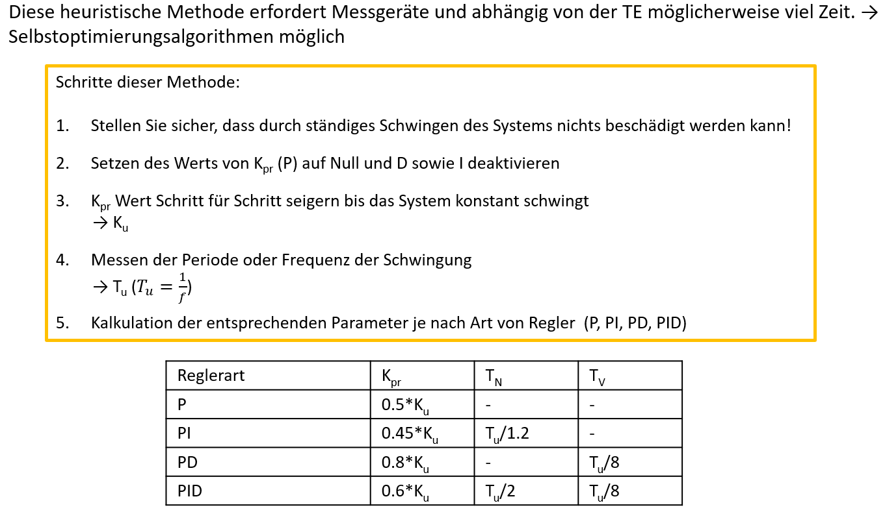
Ziegler Nichols für PT1 Tt-Glied
$$ T_u = T_t; T_g = T; K_s = K $$
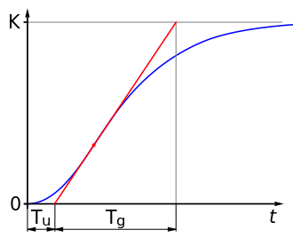
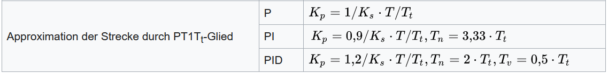
PID-Verhalten
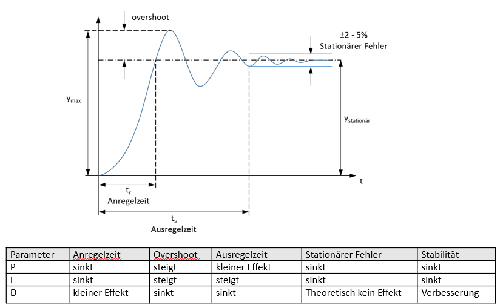
Anti Wind-Up
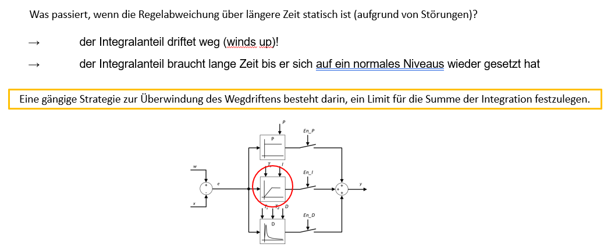